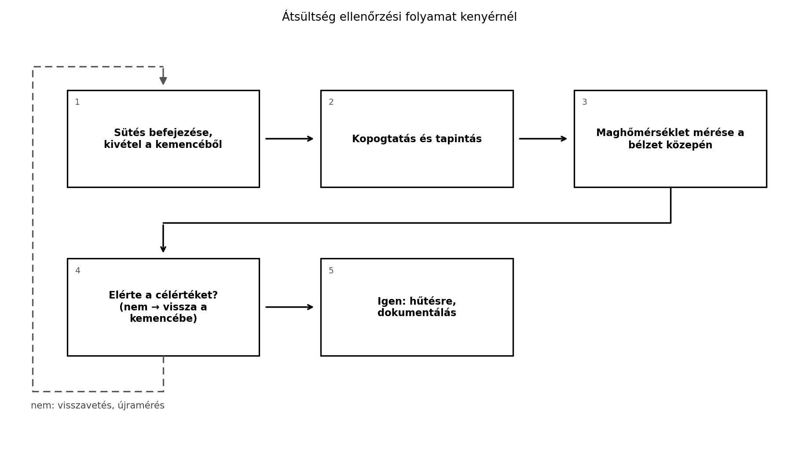

A hajnali sütés egyik legrosszabb pillanata, amikor a kenyér héja gyönyörű, a kemencéből kivéve mégis tudod, hogy belül nem sült át. Ha ilyenkor a vevő vágja fel, a termék ragacsos, tömör, és a panasz garantált. Az átsültség eldöntése ezért nem „ránézésre” történik, hanem tudatos, mérhető ellenőrzéssel. Ebben az alfejezetben a sütési eljárásokat és a különleges hőközlési módokat járjuk körbe, majd azt tanulod meg, hogyan állapítsd meg megbízhatóan a termék átsültségét, és hogyan készíts elősütött terméket, amelyet később sütnek készre.
Az alábbi folyamatábra azt mutatja, milyen lépésekkel döntheted el, hogy a kemencéből kivett kenyér átsült-e.

A folyamat lényege: a héjszín önmagában nem elegendő bizonyíték. A döntést mindig a belső hőmérséklet és a bélzet állapota együtt adja, és ha nem megfelelő, a terméket vissza kell tenni a kemencébe.
A sütőipari gyakorlatban a „sütés” gyűjtőfogalom többféle hőközlési módot takar. A termék típusa, tömege, formája és a kívánt héj-bélzet arány határozza meg, melyik eljárást választod.
Definíció. Kemencében sütés alatt a termék zárt sütőtérben, forró levegő, sugárzó fűtőfelületek és a sütőfenék vezetéses hőátadása együttes hatására történő hőkezelését értjük. Ez a leggyakoribb sütőipari eljárás.
Definíció. Sütőlemezes (lemezen) sütés során a megformázott tésztadarabokat sík, előmelegített sütőlemezre, perforált lemezre vagy tepszire helyezik, és a lemez vezeti be a hőt alulról, míg a kemencetér levegője és a sugárzó felületek felülről.
Definíció. Formában sütés során a tésztadarabot zárt vagy félig zárt, hőálló sütőformába (például kenyérforma, őzgerincforma) helyezik. A forma megtartja a termék alakját, csökkenti a szétterülést, és a hővezetés a forma falain keresztül is éri a tésztát.
Definíció. Zsírban sütés során a tésztát forró, jellemzően 170–190 °C-os (ellenőrizendő: a HACCP-terv és a fánksütő gyártói adatlapja szerint) növényi zsiradékba vagy olajba helyezik. A zsiradék közvetlen hőátadása gyors, és a termék felületén jellegzetes, tömör héj alakul ki. Ide tartoznak a fánkfélék, a farsangi fánk vagy a molnárka.
A különböző eljárások hőátadási arányai eltérnek. A formában sült kenyér bélzete párásabb, héja egyenletesebb, míg a szabadon sütött kenyérnél a héj jobban vastagodik és a termék formája jobban nő. A sütőlemezes pékáruknál az alsó héj gyorsabban sülhet, ezért a sütőlemez anyaga és hőtároló képessége fontos.
Az alábbi négy keresztmetszet a hő útját mutatja a négy eljárásban. Az egyenes nyíl a vezetést (érintkezés), a hullámos a sugárzást, az íves szaggatott az áramlást (konvekciót) jelöli. Szabadon a sütőfenéken (1) a kő alulról vezeti, a boltozat felülről sugározza a hőt; sütőlemezen (2) a hő a lemezen át jut az alsó felületre; formában (3) a forma falán át alulról és oldalról is vezetés éri a tésztát, csak a felső felület szabad; zsírban (4) a tészta úszik, a forró zsiradék közvetlenül adja át a hőt, ezért a zsiradékszinten világos „szalag” marad, és a darabot félidőben át kell fordítani.
A rajzból következik a táblázat „Amire figyelni kell” oszlopa: ahol erős az alulról jövő vezetés (sütőfenék, lemez), ott az alsó héj sülhet túl; ahol a forma mindenhonnan vezet, ott az oldalhéj vékonyabb és a bél párásabb. A HTML-kiadásban az eljárások egyenként nagyíthatók, a nyíltípusok rétegként ki-be kapcsolhatók.
| Sütési eljárás | Jellemző hőátadás | Tipikus termékek | Amire figyelni kell |
|---|---|---|---|
| Kemencében, szabadon | konvekció + sugárzás + sütőfenék vezetés | kenyér, zsemle, bagett | héj-bélzet arány, gőzölés |
| Lemezes sütés | lemez vezetés + kemencelevegő | péksütemények, kifli | alsó héj, feladási távolság |
| Formás sütés | forma vezetés + kemencetér | szendvicskenyér, kalács | héj vastagsága, csomósodás |
| Zsírban sütés | zsiradék közvetlen hőátadás | fánk, farsangi fánk | zsiradék hőmérséklet, abszorpció |
Figyelem. A zsírban sütésnél a forró zsiradék égési sérülést okozhat, és a túlhevített zsiradék füstölhet, sőt begyulladhat. Zsírtüzet soha ne olts vízzel. A fánksütőt csak betanítás után, a gyártó utasítása szerint kezeld, és a hőmérséklet-szabályzást ne feszegesd önkényesen. (Gépbiztonság.)
A hagyományos kemencés hőközlés mellett a pékségekben és az elősütött termékek feldolgozásában megjelenhetnek olyan módok, amelyek más fizikai elven juttatják a hőt a tésztába. A péknek értenie kell ezeket, még akkor is, ha a napi munkában csak kiegészítőként találkozik velük.
Infravörös (IR) sütés. Az infravörös sugárzó felületek elsősorban a termék felszínét melegítik gyorsan, ezért kiválóan alkalmas a héj színének kialakítására, a Maillard-reakció és a karamellizáció felgyorsítására. A belső rétegekbe a hő vezetéssel jut el. Önmagában vastagabb termék átsütésére nem hatékony, mert a felület könnyen túlbarnul, miközben a bélzet nyers marad. Használata kombinált kemencékben jellemző.
Nagyfrekvenciás (dielektromos) sütés. A nagyfrekvenciás készülékek a termékben lévő vízmolekulák dipólusait váltakozó elektromos térrel rezgetik; a súrlódás hőt termel. Ez a hő belülről fejlődik, ezért vastag, nagy tömegű termékek belső átsütésére alkalmas. Önmagában nem hoz létre ropogós héjat, ezért forró levegős vagy IR szakasszal kombinálják. A működési frekvencia és teljesítmény mindig a berendezés műszaki adatlapján szerepel, és a karbantartást csak szakképzett személy végezheti. (ellenőrizendő: a használt berendezés gyártói adatlapja és a munkavédelmi előírás)
Mikrohullámú sütés. A mikrohullámú készülék a vizet és más poláris molekulákat rezgésbe hozza, így a termék belseje gyorsan felmelegszik. A pékségben ritkán használják önálló sütésre, mert nem ad héjat, a tészta szerkezete gumiszerűvé válhat, és a keményítő elöregedése is gyorsulhat. Leginkább fagyasztott termékek gyors felengedtetésére vagy melegítésére alkalmas, de az elősütött termék készre sütését nem helyettesíti.
Kombinált módok. A leggyakoribb kombináció a forró levegő és mikrohullám, illetve az IR és forró levegő együttes alkalmazása. A mikrohullám vagy nagyfrekvenciás tér a belső hőmérsékletet gyorsan emeli, míg a forró levegő és az IR sugárzás a héj kialakulását és a kívánt barnulást biztosítja. A kombinált sütés csökkentheti a sütési időt, de beállítása termékenként és gépenként eltér, ezért a paramétereket a gyártói adatlapon és a technológiai lapon kell rögzíteni. (ellenőrizendő: az adott berendezés betanítási útmutatója)
Tilos. Fém tárgyat, fémfóliát vagy fémtálcát mikrohullámú térbe helyezni, mert ív keletkezhet. A nagyfrekvenciás és mikrohullámú berendezéseken a védőburkolatot eltávolítani, az ajtó reteszelését kiiktatni életveszélyes. (Gépbiztonság.)
A sütés akkor elfogadható, ha a termék nemcsak a felszínen, hanem a legvastagabb pontján is elérte a technológiai és mikrobiológiai szempontból szükséges hőmérsékletet. Az átsültség három, egymást kiegészítő módon állapítható meg.
Kopogtatás és tapintás. A kemencéből kivett kenyér alját finoman megkopogtatjuk. Az átsült, kihűlőben lévő kenyér jellegzetesen „kongó”, üreges hangot ad, mert a bélzet gázos szerkezete és a héj merevsége együtt rezonál. A nyers vagy tömör bélzet hangja tompa, „töppedt”. A tapintásos ellenőrzés a héj rugalmasságát vizsgálja: az átsült termék enyhe nyomásra visszaugrik. A tapintás lehet szubjektív, ezért tanulóként többször össze kell vetned a mért maghőmérséklettel.
Maghőmérséklet mérése. A leggyakoribb műszer a szúró hőmérő vagy digitális maghőmérő, amelyet a termék legvastagabb pontjába, a geometriai közepét megcélozva szúrsz. A sütőipari kenyérnél a kívánt bélhőmérséklet jellemzően 96–98 °C (ellenőrizendő: a pékség HACCP-terve, termékspecifikus előírás; a hőkezelés célja a bélzet keményítő-hőkezelése és a mikrobicid hőmérséklet elérése – lásd A mikrobák gátlása és elpusztítása). A mérésnél ügyelj arra, hogy a szúrófej ne érjen a forró sütőlemezhez vagy a forma falához, mert a kapott érték akkor nem a bélzet hőmérséklete.
Bélzet vizsgálata. A kihűlés után (vagy próbasütésnél meleg, de nem forró állapotban) a terméket felvágjuk. Az átsült bélzet egyenletesen rugalmas, a morzsa nem ragacsos, nem kenődik el, és a vágási felület nem csíkos. A nem átsült bélzet közepén nedves, tömör réteg vagy „gyurmaszemcsék” láthatók. A bélzetvizsgálat a legbiztosabb, de romboló módszer, ezért a gyártásban mintavételesen vagy hiba gyanújakor alkalmazzák.
A három próbát az alábbi ábra foglalja össze. A felső sorban a kopogtatás a kenyér alján (1), a maghőmérő helyes beszúrása a legvastagabb pont geometriai közepébe (2a) és a kihűlt, átvágott kenyér bélzete (3) látható. Az alsó sor a maghőmérő három tipikus hibás beszúrását mutatja (2b): a túl sekély szonda a melegebb külső rétegben mér, a héj közelében vagy oldalra kifutva nem a leglassabban melegedő pontot méri, az alul átszúrt szonda pedig a forró lemez vagy forma hőmérsékletét adja – mindhárom a valóságosnál magasabb értéket mutathat, így a nyers bél „átsültnek” látszik.
Higiénia. A maghőmérő szondája közvetlenül érintkezik az élelmiszerrel: használat előtt és után tisztítani és fertőtleníteni kell, és a mért értéket a sütési naplóban rögzíteni (ellenőrizendő: a pékség HACCP-terve). A HTML-kiadásban a próbák és a beszúrási változatok gombbal egyenként megnézhetők.
Szabály. A sütés akkor tekinthető befejezettnek, ha a héj színe megfelelő, a kopogtatási próba üreges hangot ad, és a maghőmérséklet a termékspecifikus célértéken belül van. Ha bármelyik feltétel nem teljesül, a terméket vissza kell helyezni a forró kemencébe, és a sütést rövid szakaszokban folytatni. (ellenőrizendő: a HACCP-terv átsültségre vonatkozó kritikus határa)
Továbbvitt eredmény. Ezt az átsültség-ellenőrzést a Sütési idő és hőmérséklet, átsültség, kisütés és dokumentálás alfejezetben a kisütés eldöntésére használjuk; a kemencetípusok sütési jellemzőit pedig az A kemencék rendszerezése és fűtési rendszerei alfejezetben vizsgáljuk.
A megszakított sütés célja, hogy a tésztát félig megsütjük, gyorsan lehűtjük, majd csomagolva, hűtve vagy fagyasztva eljuttatjuk egy másik helyre, ahol később készre sütik. Ezt a nemzetközi sütőipari gyakorlatban gyakran „bake-off” eljárásnak is nevezik. A termék ekkor nem késztermék, hanem félkész, elősütött élelmiszer, ezért a fogyasztói jelölésen és a szállítási dokumentumban egyértelműen közölni kell, hogy további hőkezelés szükséges. (ellenőrizendő: az 1169/2011/EU fogyasztói tájékoztatási rendelet szerinti jelölési kötelezettség és az illetékes hatóság útmutatója)
Technológiai elv. Az elősütés során a bélzet szerkezete teljesen megszilárdul: a keményítő csirizesedik, a fehérje kicsapódik, a bél maghőmérséklete eléri a teljes átsültség tartományát (tanulási példa: elősütésnél legalább 92 °C, a végső sütés után a kenyérnél legalább 96 °C). A sütési idő rövidebb, a kemence hőmérséklete alacsonyabb, így a héj halvány marad. A készre sütés elsősorban a héj színét és ropogósságát adja. A pontos paraméter termékenként, lisztenként és kemencénként változik, ezért a tanulási értékek irányadók, nem gyártói előírást helyettesítenek. (ellenőrizendő: az üzemi technológiai lap)
Elősütés tipikus lépései: 1. A megformázott, bevetett terméket a normál sütésnél alacsonyabb hőmérsékleten vagy rövidebb ideig elősütjük. Például egy 350 g-os bagettet 210–220 °C-on addig sütünk, amíg a maghőmérséklet legalább 92 °C lesz, de a héj még halvány (a sütési idő a termék tömegétől függ; tanulási példa, ellenőrizendő: technológiai lap). 2. A terméket a kemencéből kivéve haladéktalanul gyors hűtőbe tesszük, mert a félkész termékben visszamaradó nedvesség és a magban még élő, spórás mikrobák szaporodásának kedvez a meleg környezet. A hűtés legyen gyors (tanulási példa: rácson, szellőztetve szobahőmérsékletre), majd a technológia szerint fagyasztás vagy védőgázas csomagolás következik; a hűtési idő és hőmérséklet a pékség HACCP-tervében rögzített érték, a 852/2004/EK rendelet csak az általános hűtési elvet adja. (ellenőrizendő: HACCP-terv, NÉBIH-útmutató) 3. Lehűlés után az elősütött terméket higiénikus körülmények között, lehetőleg módosított atmoszférájú vagy páraáteresztő csomagolásba zárjuk. A csomagoláson fel kell tüntetni, hogy a termék félkész, újrasütést igényel, valamint a tárolási hőmérsékletet és a minőségmegőrzési időt. 4. A készre sütés helyszínén a terméket előmelegített kemencében, általában 200–220 °C-on 6–12 percig tovább sütik, amíg a maghőmérséklet eléri a 96–98 °C-ot. (tanulási példa; ellenőrizendő a termék technológiai lapja)
Az elősütött termék előnye, hogy a fogyasztó vagy kiskereskedő frissen sült, ropogós készterméket kap anélkül, hogy a teljes tésztafeldolgozást helyben kellene elvégezni. A hátránya, hogy a félkész termék kezelése (hűtés, hűtőlánc, szállítás, újrasütés) további kockázatot hordoz, és a végleges héj csak a készre sütés után alakul ki.
Cél: biztonságos, dokumentált elősütés és készre sütés.
Lépések: 1. Ellenőrizd a kemence hőmérsékletét és a gőz beállítását. Az elősütéshez használt paramétereket a technológiai lap szerint állítsd be. 2. A megkelt tésztát a szokott módon vesd be, majd süsd rövid idővel, amíg a héj halvány, a bélzet maghőmérséklete eléri a legalább 92 °C-ot (elősütési tanulási érték; ellenőrizendő: technológiai lap, HACCP-terv). A végső sütés után a kenyérnél legalább 96 °C kell (7. lépés). Ne süsd túl sötétre. 3. A kemencéből kivéve azonnal mérd meg a maghőmérsékletet egy minta darabban, és jegyezd fel a sütési naplóba. 4. A terméket szellőztetve, gyorsan hűtsd le (tanulási példa: rácson, szobahőmérsékletre), majd a technológia szerint fagyaszd vagy védőgázas csomagolásban tárold. A hűtés idejét és hőmérsékletét a HACCP-terv szerint dokumentáld (ellenőrizendő: HACCP-terv). 5. Csomagold az elősütött terméket higiénikus környezetben, jelöléssel, allergéndeklarációval és „újrasütendő” felirattal. 6. Az újrasütés előtt győződj meg arról, hogy a tárolási hőmérséklet megfelelő volt, és a termék nem sérült. 7. Helyezd az elősütött terméket előmelegített kemencébe, és süsd készre 200–220 °C-on, amíg a maghőmérséklet eléri a 96–98 °C-ot, a héj aranyszínű, kopogtatásra kongó hangot ad. 8. A készre sütött terméket rövid hűtés után értékesítsd, vagy azonnal tálald. A fogyasztói tájékoztatón ne szerepeljen már az „újrasütendő” jelölés, mert a termék kész.
HACCP. Az átsültség a sütőiparban gyakran kritikus szabályozási pont (CCP), mert a nem megfelelő hőkezelés mikrobiológiai veszélyt hagyhat a termékben. Az alábbi táblázat tanulási példa, a tényleges értékeket a pékség HACCP-terve, a termékspecifikus előírás és a hatósági útmutató rögzíti.
| Veszély | Megelőzés / kritikus határ | Monitoring | Helyesbítés |
|---|---|---|---|
| A kórokozó vagy romlást okozó mikrobák túlélése a bélzetben | Sütés után a bélzet maghőmérséklete legalább 96 °C, jellemzően 96–98 °C (vö. A sütés célja és a bélzetben lejátszódó folyamatok; ellenőrizendő: termékspecifikus CCP) | Minden sütési tételből mintavételes maghőmérséklet-mérés, rögzítés a CCP-lapon | A nem átsült tételt vissza a kemencébe, újramérés; ismételt hiba esetén leállítás és hibafeltárás |
| Elősütött, félkész termékben a baktériumok elszaporodása | Gyors lehűtés, majd a technológia szerinti tárolás (fagyasztás vagy védőgázas csomagolás), a HACCP-tervben rögzített hűtési idő és hőmérséklet (ellenőrizendő: HACCP-terv, NÉBIH-útmutató) | Hűtő hőmérsékletének folyamatos mérése, a hűtési idő dokumentálása | A hűtőlánc megszakadása esetén a tétel kockázatértékelése, szükség esetén selejtezése |
| A fogyasztó tájékoztatásának hiánya az elősütött termékről | A csomagoláson „újrasütendő” jelölés és allergénjelölés (ellenőrizendő: 1169/2011/EU) | Kiadás előtt címkeellenőrzés | Hibás címke esetén újracímkézés, a tétel visszatartása |
Higiénia. A maghőmérő szondáját minden használat előtt és termékváltásnál fertőtleníteni kell, hogy ne vigyél be szennyeződést a sült termék belsejébe. Az elősütött termékek kezelésénél különösen fontos a tiszta munkaruha, az eldobható kesztyű és a hűtött tárolóterület rendben tartása.
Egy kisebb pékség elősütött ciabattát szállított egy kávézóba. A kávézóban a reggeli műszakban a munkatárs sietett, és a kemence helyett mikrohullámú sütőbe tette a ciabattát, mondván, hogy „csak fel kell melegíteni”. A termék külseje puha maradt, a bélzete gőzölgő, de tésztaszerű volt, és a héj nem ropogott. Vendégpanasz érkezett. A pék a helyszínen elvégezte a hibaelemzést: a mikrohullámú sütés nem tud héjat képezni, és a belső hőmérséklet ugyan emelkedett, de nem volt elegendő egyenletes hőkezelés. A megoldás az lett, hogy a kávézó részére rövid betanítást tartottak: az elősütött terméket csak forró levegős kemencében, meghatározott idő–hőmérséklet paraméterrel szabad készre sütni, és a műveletet egy egyszerű ellenőrzőlistán rögzítették. A tanulság: az elősütésnél nem elég a terméket legyártani, a befejező sütéshez is technológiát és képzést kell adni.
Készre sütött termék jó minősége: - A héj színe egyenletes, a termékspecifikus jellemzőknek megfelelő (aranysárga, világosbarna, rozsnál mélyebb). - Kopogtatásra kongó, üreges hang. - A maghőmérséklet legalább 96 °C, jellemzően 96–98 °C (ellenőrizendő: termékspecifikus érték). - A bélzet rugalmas, nem ragacsos, nem tömör. - A termék tömege és formája a gyártmánylap szerint alakul.
Elősütött termék megfelelősége: - A héj halvány, nem túlbarnult. - A maghőmérséklet a termékspecifikus elősütési célértéken belül, a teljes átsültség tartományában, legalább 92 °C (tanulási példa, ellenőrizendő). - A termék csomagolása sértetlen, jelölése pontos. - A tárolási hőmérséklet a csomagolás szerinti.
1. feladat (A) Sorold fel a négy alapvető sütési eljárást, és mindegyikhez adj egy-egy tipikus terméket.
2. feladat (A) Magyarázd el röviden, mi a különbség az infravörös és a mikrohullámú sütés hőközlésében.
3. feladat (B) Egy 350 g-os elősütött rozsos cipó elősütése 210 °C-on tartott, a maghőmérséklet 93 °C lett, a héj halvány. Tervezd meg az újrasütést: add meg a javasolt hőmérsékletet, időtartamot, és az átsültség ellenőrzésének lépéseit.
4. feladat (B) A kemencéből kivett 1 kg-os kenyér maghőmérséklete 88 °C. Mi a teendő, és miért?
5. feladat (C) Hibaelemzés: A boltban az elősütött bagettet 220 °C-on 8 percig újrasütötték. A héj szép barna, de a bélzet közepe ragacsos. Mi lehet a legvalószínűbb ok, és mit ellenőriznél először?
6. feladat (C) Tervezz HACCP monitoring lépést a sütés CCP-hez: mit mérsz, milyen gyakran, mi a kritikus határ, és mi a helyesbítés? Használd a táblázatban látott tanulási példa formátumát.
7. feladat (D) A tanpékségben 220 °C-os kemencében 400 g-os búzakenyeret sütsz. 22 perc után kopogtatásra tompa hangot hallasz, a maghőmérséklet 89 °C. Írd le a további lépéseket a HACCP szerint, beleértve a dokumentálást is.
Az infravörös sugárzó felületről elektromágneses sugárzás éri a terméket, elsősorban a felszínt melegíti, és a Maillard-reakcióval héjat, barnulást hoz létre. A mikrohullám a termék belsejében lévő vízmolekulákat gerjeszti, így a hő belül keletkezik; héjat önmagában nem képez, és a bélzet szerkezetét gumissá teheti.
Újrasütési javaslat (tanulási példa): előmelegített kemence 210–220 °C, sütési idő 6–8 perc. Ellenőrzés: kopogtatással kongó hang, maghőmérséklet 96–98 °C, a héj aranyszínű, a bélzet rugalmas, nem ragacsos. Ha a maghőmérséklet nem éri el a célértéket, rövid szakaszokban tovább kell sütni.
A kenyér nem átsült, mert a maghőmérséklet 88 °C, ami a 96–98 °C-os cél alatt van. Vissza kell tenni a forró kemencébe, és 3–5 percenként ellenőrizve tovább sütni, amíg a maghőmérséklet eléri a célértéket. A dokumentációban rögzíteni kell az újrasütést és a mért hőmérsékleteket.
A legvalószínűbb ok, hogy a termék belső hőmérséklete nem érte el a 96–98 °C-ot; a sütési idő túl rövid volt, vagy a kemence hőmérséklete nem volt egyenletes, esetleg az elősütött termék túl hideg volt a berakáskor. Először a maghőmérsékletet mérnénk a termék közepén. Ha az alacsony, további sütés szükséges; ha a héj már túl sötét, a sütőtér hőmérsékletét csökkenteni kell, és a terméket alacsonyabb hőmérsékleten, hosszabb idővel készre sütni.
Példa HACCP monitoring: A sütés CCP-hez minden tételből mintavételesen, de legalább a tétel első és utolsó darabjából maghőmérsékletet mérünk. Kritikus határ: bélzet maghőmérséklete legalább 96 °C, jellemzően 96–98 °C (tanulási példa; ellenőrizendő). Ha a mért érték a határ alatt van, a tételt vissza kell vetni a kemencébe, újra ellenőrizni. A mérést a CCP-lapon dokumentáljuk, dátummal, termékazonosítóval, mért értékkel és az intézkedéssel.
A kopogtatás tompa hangja és a 89 °C-os maghőmérséklet miatt a kenyér nem átsült. Lépések: (1) A kemence hőmérsékletét ellenőrzöm, hogy valóban 220 °C-e. (2) A kenyeret visszahelyezem a kemencébe további 5 percre. (3) Kiveszem, újra mérem a maghőmérsékletet középen. (4) Ha elérte a 96–98 °C-ot és kopogtatásra kong, hűtésre viszem. (5) A CCP-lapon rögzítem: termék, idő, első mért hőmérséklet (89 °C), visszavetés ténye, második mért hőmérséklet, döntés.
A sütési eljárások négy alapvető formája a kemencés, a sütőlemezes, a formás és a zsírban sütés. Ezek hőátadása eltérő, ezért a termék jellege és tömege dönti el, melyiket használod. A különleges módok – infravörös, nagyfrekvenciás, mikrohullámú – egy-egy fizikai hatást erősítenek fel, de önmagukban ritkán elegendők, ezért kombinált berendezésekben alkalmazzák őket. Az átsültség megállapításának aranyszabálya: ne a héjszínre hagyatkozz, hanem kopogtatással, maghőmérséklet-méréssel és szükség esetén bélzetvizsgálattal győződj meg arról, hogy a bélzet elérte a legalább 96 °C-ot, jellemzően 96–98 °C-ot (ellenőrizendő: termékspecifikus CCP-határ). A megszakított sütés (elősütés) során a terméket szándékosan félkész állapotban hűtjük le, és később, forró levegős kemencében sütjük készre. Itt fokozott a mikrobiológiai kockázat, ezért a hűtőláncot, az „újrasütendő” jelölést és a HACCP-dokumentálást be kell tartani. Továbbvitt eredmények: az átsültség méréses ellenőrzését a Sütési idő és hőmérséklet, átsültség, kisütés és dokumentálás alfejezetben, a kemencék jellemzőit az A kemencék rendszerezése és fűtési rendszerei alfejezetben, a termékspecifikus sütési paramétereket pedig a kenyér- és péksütemény-fejezetekben használjuk.